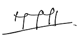
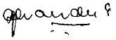

The Directors submit their report and the audited financial statements of the Company, Sri Lanka Telecom PLC and the Group, which includes its subsidiary undertakings, for the 2014 financial year.
Sri Lanka Telecom (SLT) was formed by an Incorporation Order made under Section 2 of the State Industrial Corporations Act No. 49 of 1957 and published in the Extraordinary Gazette No. 596/11 of 6 February 1990. Subsequently, in terms of an order made by the Minister of Posts and Telecommunications (‘the Minister’) on 24 July 1991, under Section 23 of the Sri Lanka Telecommunications Act No. 25 of 1991 and published in the Gazette No. 675 of 9 August 1991, all properties, rights and liabilities (other than those excluded by the agreement entered into between the Minister and SLT as per sub-section 2 of Section 23 of the Sri Lanka Telecommunication Act) to which the Department of Telecommunications (DOT) was entitled or subject to immediately before the transfer date of 1 September 1991, were vested with SLT.
On 25 September 1996, SLT was converted to a public limited company under the Conversion of Public Corporations of Government-Owned Business Undertakings into Public Limited Companies Act No. 23 of 1987, vide Extraordinary Gazette No. 942/7 dated 25 September 1996.
On 5 August 1997, the Government of Sri Lanka as the sole shareholder of SLT divested 35% (631,701,000 ordinary shares) of the issued ordinary share capital to Nippon Telegraph and Telephone Corporation (NTT) and entered into an agreement to transfer the management of SLT to NTT. On 2 July 1998, the Government of Sri Lanka divested a further 3.5% of the issued ordinary share capital by transfer of 63,170,010 ordinary shares to the employees of SLT. On 22 March 2000, NTT transferred the entire 35% of their holding in SLT to NTT Communications Corporation (NTT Com).
The Government of Sri Lanka divested a further 12% of its holding to the public through a listing on the Colombo Stock Exchange in November 2002, reducing its holding to 49.5%.
On 4 June 2007, SLT was re-registered under the Companies Act No. 07 of 2007 as Sri Lanka Telecom PLC (SLT PLC).
On 1 April 2008, NTT Com of Japan who held 635,076,318 ordinary shares, which constituted 35.2% of the total issued stated capital of SLT PLC, sold their entire holding to Global Telecommunications Holdings N.V. of Netherlands (GTH) at a price of Rs. 50.50 per share. Following the share trade by NTT Com, GTH, in terms of the Takeovers and Mergers Code, announced a mandatory offer to the remaining shareholders which was closed on 2 June 2008. At the close of the mandatory offer, GTH had acquired additional 9.78% of the stated capital of SLT PLC, making the total shareholding to 44.98% of the total issued stated capital of SLT PLC. Since the expiration of the management agreement with NTT, no management agreement had been entered into by SLT PLC.
The Group provides a broad portfolio of telecommunication services across Sri Lanka, the main activity being domestic and international fixed and mobile telephone services. In addition, the range of services provided by the Group include, interalia, internet services, IPTV, Wimax operations, data services, domestic and international-leased circuits, frame relay, satellite uplink and maritime transmission.
The Company’s interest in subsidiaries and the business activities of the respective subsidiaries are as follows:
| Name of the subsidiary | Business activity |
| Mobitel (Private) Limited | Mobile telephone services |
| Sri Lanka Telecom (Services) Limited | Total network solutions |
| SLT Publications (Private) Limited | Directory information and publication services |
| SLT Human Capital Solutions (Private) Limited | Workforce solutions |
| SLT VisionCom (Private) Limited | IPTV suport services |
| Sky Network (Private) Limited | Wireless broadband operations |
| SLT Property Management (Private) Limited | Property management |
| SLT Campus (Private) Limited | Higher education services of ICT and business management |
A detailed review of the Company’s activities, the development of its businesses and an indication of likely future developments are given under Management Discussion and Analysis.
The Directors who served during 2014 were:
| Name of Director | Position | Date of appointment | Date of re-election |
| Mr. Nimal Welgama | Chairman | 20.05.2010 | 28.03.2011 |
| Mr. Chan Chee Beng | Director | 05.06.2008 | 09.04.2014 |
| Mr. Jeffrey Jay Blatt | Director | 05.06.2008 | 29.03.2012 |
| Mr. Jayantha Dharmadasa | Director | 26.05.2010 | 29.03.2012 |
| Mr. Shameendra Rajapaksa | Director | 26.05.2010 | 24.04.2013 |
| Mr. Kalinga Indatissa | Director | 26.05.2010 | 24.04.2013 |
| Mr. Lawrence Michael Paratz | Director | 26.05.2010 | 09.04.2014 |
| Ms. Pushpa Wellappilli | Director | 28.06.2012 | 24.04.2013 |
| Ms. Lai Choon Foong | Director | 09.05.2014 |
The following Directors resigned from the Directorate subsequent to the financial year:
| Name of Director | Position | Date of resignation |
| Mr. Nimal Welgama | Chairman | 22.01.2015 |
| Mr. Jayantha Dharmadasa | Director | 16.01.2015 |
| Mr. Shameendra Rajapaksa | Director | 09.01.2015 |
| Mr. Kalinga Indatissa | Director | 23.01.2015 |
| Ms. Pushpa Wellappilli | Director | 21.01.2015 |
The following Directors were appointed to the Board to fill the casual vacancies that arose due to the above resignations:
| Name of Director | Position | Date of appointment |
| Mr. P. G. Kumarasinghe Sirisena | Chairman | 23.01.2015 |
| Mr. Krishantha Cooray | Director | 03.02.2015 |
| Ms. Nilanthi Pieris | Director | 03.02.2015 |
| Ms. G. D. Chandra Ekanayake | Director | 03.02.2015 |
| Mr. Firdouse Farook | Director | 03.02.2015 |
The Directors may from time-to-time appoint one or more Director(s). Any such Director shall hold office only until the next AGM and shall then offer themselves for election by the Company’s shareholders. The Company’s Articles of Association, require the Directors to retire and offer themselves for election by shareholders at the first AGM after their appointment. Notwithstanding that the Articles of Association provide that one-third of the Directors (or the number nearest to one third) are to retire by rotation at each AGM and offer themselves for re-election by the shareholders, in compliance with the Articles of Association of the Company.
All Directors appointed to fill casual vacancies arising from the resignation of the Directors abovementioned, will be proposed for re-election this year, at the forthcoming AGM in accordance with the Company’s Articles of Association. In addition, Mr. Jeffrey Jay Blatt who, being subject to retirement by rotation, has been longest in office since his last election, will offer himself for re-election.
The Company maintains Directors’ and officers’ liability insurance, which gives appropriate cover for any legal action brought against its Directors.
The Company carries out transactions in the ordinary course of business at commercial rates with entities in which a Director of the Company is the Chairman or a Director of such entities or holds substantial interest in such entities.
The entities in which the Directors of the Company hold directorships in other entities are disclosed below. The transactions of the Company with the Directors and with these entities (if any) are disclosed in Note 33.2.
The details are given in Note 33 in the notes to the financial statements.
The audit committee has reviewed them in compliance with the Code of Best Practices on Related Party Transactions adopted by the Securities and Exchange Commission of Sri Lanka and made recommendation to the Board that transactions with related parties are recurrent, of revenue and trading nature, which is necessary for the day-to-day operations of the Company.
The remuneration and other benefits of the Directors are given in Note 7 to the financial statements.
Details of the Company’s share capital are set out in Note 29 to the financial statements. The issued share capital of the Company as at 31 December 2014 was 1,804,860,000 ordinary shares. The rights and obligations attached to these shares are governed by Common Law and the Company’s Articles of Association.
As per the share register, the following shareholders held more than 5% of the 1,804,860,000 ordinary shares in issue as at 31 December 2014:
| Secretary to the Treasury (Government of Sri Lanka) | 49.50% |
| Global Telecommunications Holdings N.V. of Netherlands | 44.98% |
| Shares held by the public (12,205 shareholders) | 5.52% |
| 100.00% |
Ordinary shareholders are entitled to receive notice and to attend and speak at any general meetings of the Company. On a show of hands every shareholder present in person or by proxy (or being a corporation present by a duly authorised representative) shall have one vote and on a poll every shareholder who is present in person or by proxy or (in the case of a corporate member) by a duly-authorised representative shall have one vote for every share of which he is the holder. A shareholder entitled to attend and vote at a general meeting may appoint a proxy to attend and vote instead of him. A proxy need not be a shareholder of the Company.
A statement by the Directors of their responsibilities for preparing the financial statements is included in the Statement of Directors’ Responsibilities. Our significant accounting policies are set out on the financial statements and conform with IFRS as adopted in Sri Lanka as SLFRSs.
These policies and applicable estimation techniques, have been reviewed by the Directors who have confirmed them to be appropriate for the preparation of the 2014 financial statements.
So far as the Directors are aware, there is no relevant information that has not been disclosed to the auditors and each of the Directors believe that all steps have been taken that ought to have been taken to make them aware of any relevant audit information and to establish that the auditors have been made aware of that information.
All amounts are stated in Sri Lankan Rupees million, unless otherwise stated.
The total income for 2013 and 2014 were as follows:
| 2014 | 2013 | |||
| Group
Rs. million |
Company
Rs. million |
Group
Rs. million |
Company
Rs. million |
|
| Operating revenue | 65,040 | 38,950 | 60,144 | 36,781 |
| Operating costs | (46,268) | (29,559) | (41,218) | (26,821) |
Details are given in the income statement of the financial statements.
| 2014 | 2013 | |||
| Group
Rs. million |
Company
Rs. million |
Group
Rs. million |
Company
Rs. million |
|
| Profit before tax | 8,251 | 4,859 | 7,365 | 5,014 |
| Profit after tax | 6,001 | 3,324 | 5,419 | 3,635 |
The Board of Directors of the company has declared a first and final dividend of Rs. 0.89 per share for the financial year ended 31 December 2014 at a meeting held on 27 February 2015. As required by Section 56 (2) of the Companies Act No. 07 of 2007, the Board of Directors have certified that the Company satisfies the Solvency Test in accordance with the Section 57 of the Companies Act No. 07 of 2007 and have obtained a certificate from the auditors, prior to approving the first and final dividend of Rs. 0.89 per share for this year. The first and final dividend will be paid on 22 May 2015 to those shareholders on the register as at 14 May 2015.
Total Reserves of the Company stood at Rs. 58,577 million as at 31 December 2014, details of which are given in the Statement of Changes in Equity.
The Directors are responsible for the preparation of the financial statements so that they present a true and fair view of the state of affairs of the Company. The Directors are of the view that these financial statements have been prepared in conformity with the requirements of the Companies Act No.7 of 2007, the Sri Lanka Accounting and Auditing Standards Act No.15 of 1995 and the Continuing Listing Rules of the Colombo Stock Exchange.
You can access the independent auditors’ report here.
The accounting policies adopted by the Company and its subsidiaries have been consistently applied from previous years.
The movements in property, plant & equipment during the year and current status of value of properties are set out in Note 13 to the financial statements.
Land is carried at cost within the financial statements. It is not practical to estimate the market value of land at each reporting date.
The remuneration payable by the Company to the independent auditors is given in Note 7 to the financial statements.
The Directors are satisfied that, based on written representations made by the independent auditors to the Board, they did not have any relationship or any interest with the Company and its subsidiaries that would impair their independence.
The Directors confirm that to the best of their knowledge all taxes, duties and levies payable by the Company and all contributions, levies and taxes payable on behalf of and in respect of the employees of the company and all other known statutory dues as were due and payable by the Company as at the reporting date have been paid or where relevant provided for in the financial statements on the statement of financial position covering contingent liabilities. The tax position of the company is disclosed on Note 11.
After making adequate enquiries from management, the Directors are satisfied that the Company and its subsidiaries operate in a manner that minimises the detrimental effects on the environment and provides products and services that have a beneficial effect on the customers and the communities within which the Group operates.
During the year the Directors had approved donations amounting to Rs. 50,000/- for charitable purposes (2013 - Rs. 850,000/-). The amount includes contributions on account of Corporate Social Responsibility (CSR) initiatives as well.
SLT has a range of employment policies covering such issues as diversity, employee well-being and equal opportunities. The Company takes its responsibilities to the disabled seriously and seeks not to discriminate against current or prospective employees because of any disability. Employees who become disabled during their career at SLT, will be retained in employment wherever possible and given help with rehabilitation and training.
The average number of employees in the Group during the period is given in Note 7.1 to the Group financial statements. Group companies operate within a framework of HR policies, practices and regulations appropriate to their market sector and country of operation. Policies and procedures for recruitment, training and career development promote equality of opportunity regardless of gender, sexual orientation, age, marital status, disability, race, religion or other beliefs and ethnic or national origin. The aim is to encourage a culture in which all employees have the opportunity to develop fully according to their individual abilities and the needs of the Group.
The number of persons employed by SLT as at 31 December 2014 disclosed here.
The Group is conscious of the impact, direct and indirect, on the environment due to its business activities. Every endeavour is made to minimise the adverse effects on the environment to ensure sustainable continuity of our natural resources. The activities undertaken by the Group in recognition of its responsibility as a corporate citizen are disclosed more fully under corporate citizenship.
No event had occurred since the reporting date and the approval of these financial statements, which would require adjustments to, or disclosure in, these financial statements.
The Company’s auditor, KPMG has indicated its willingness to continue in office and a resolution seeking to reappoint them as the Company’s auditors and to authorise the Directors to determine their remuneration will be proposed at the forthcoming AGM.
KPMG has been SLT’s auditors since 2009. The audit committee carried out the annual review of their performance by gathering feedback from Committee members and senior management prior to their recommendation for re-appointment of auditors.
The audit committee has recommended their re-appointment to the Board.
The Performance Section includes information on our financial results, financial outlook, cash flow, loans and borrowings and financial position. Notes 4, 17, 21and 22 of the financial statements include information on the financial risk management objectives and exposures to interest, foreign exchange, credit, liquidity and market risks. Group’s investments, cash and cash equivalents, borrowings. The Directors are satisfied that the cash flow forecast, taking into account reasonably possible risk sensitivities associated with this forecast and SLT Group’s current funding and facilities, alongside SLT Group’s funding strategy, shows that the Group will continue to operate for the foreseeable future. The Directors therefore continue to have a reasonable expectation that the Group has adequate resources to continue in operational existence for the foreseeable future and continue to adopt a going concern basis.
The Company’s AGM will be held at 10.00 am on Wednesday, 13 May 2015 at Kings’ Court, Cinnamon Lakeside Hotel Colombo, No. 115, Sir Chittampalam A. Gardiner Mawatha, Colombo 02. Details of the meeting and the resolutions to be proposed are set out in a separate Notice of Meeting which accompanies this annual report.
By order of the Board

P. G. Kumarasinghe Sirisena
Chairman

G. D. Chandra Ekanayake
Director
Mahesh Athukorale
Company Secretary
27 February 2015
Colombo
SLT Group Directors and their directorships in other companies are as follows:
| Director | Company | Relationship |
| Mr. Nimal Welgama | Mobitel (Private) Limited | Chairman/Director |
| Sri Lanka Telecom (Services) Limited | Director | |
| SLT Publications (Private) Limited | Chairman/Director | |
| SLT Human Capital Solutions (Private) Limited | Chairman/Director | |
| SLT VisionCom (Private) Limited | Chairman/Director | |
| Sky Network (Private) Limited | Chairman/Director | |
| SLT Property Management (Private) Limited | Chairman/Director | |
| SLT Campus (Private) Limited | Chairman/Director | |
| Upali Group of Companies | CEO | |
| Monetary Board of the Central Bank of Sri Lanka | Member | |
| Mr. Chan Chee Beng | Maxis Berhad, Malaysia | Director/CEO |
| Aircel Limited | Director | |
| Aircel Cellular Limited | Director | |
| Mobitel (Private) Limited | Director | |
| SLT Property Management (Private) Limited | Director | |
| SLT Campus (Private) Limited | Director | |
| Usaha Tegas Sdn Bhd | Director | |
| Global Telecommunication Holding NV | Director | |
| Maxis Communications Berhad | Director | |
| Maxis Mobille Sdn Bhd | Director | |
| Maxis Mobile service Sdn Bhd | Director | |
| Maxis International Sdn Bhd | Director | |
| Binariang GSM Sdn Bhd | Director | |
| Bumi Armuba Bhd | Director | |
| Dishnet Wireless Limited | Director | |
| South Asia Communications (Private) Limited | Director | |
| PT Axis Telekom Indonesia | Commissioner | |
| PT Maxis Communications | Commissioner | |
| Maxis Broadband Sdn Bhd | Director | |
| Mr. Jeffrey Jay Blatt | SLT VisionCom (Private) Limited | Director |
| Mr. Shameendra Rajapaksa | SLT Publications (Private) Limited | Director |
| SLT Property Management (Private) Limited | Director | |
| SLT Human Capital Solutions (Private) Limited | Director | |
| SLT Campus (Private) Limited | Director | |
| SriLankan Airlines Limited | Director | |
| Mr. Jayantha Dharmadasa | SLT VisionCom (Private) Limited | Director |
| SLT Human Capital Solutions (Private) Limited | Director | |
| Nawaloka Hospitals PLC | Chairman | |
| Nawaloka Holdings (Private) Limited | Chairman | |
| New Ashford International (Private) Limited | Chairman | |
| Sasiri Polysacks (Private) Limited | Chairman | |
| Nawaloka Group of Companies (Private) Limited | Chairman | |
| Concord Venture Export Lanka (Private) Limited | Chairman | |
| Nawaloka Metropolis Chemicals Laboratories (Private) Limited | Chairman | |
| Nawaloka Medical Centre (Private) Limited | Chairman | |
| Nawaloka Polysacks Sharjah Ceyoka (Private) Limited | Chairman | |
| Nawaloka Trading (Private) Ltd | Chairman | |
| Koala (Private) Limited | Chairman | |
| Sahas Ware (Private) Limited | Chairman | |
| Nawaloka Petroleum (Private) Limited | Chairman | |
| Nawaloka Aviation (Private) Limited | Chairman | |
| Nation Lanka Finance PLC | Chairman | |
| Nawaloka Construction Co. (Private) Limited | Chairman | |
| Mr. Kalinga Indatissa | SLT Human Capital Solutions (Private) Limited | Director |
| SLT Campus (Private) Limited | Director | |
| SLT Property Management (Private) Limited | Director | |
| Mrs. S. Pushpa Wellappili | Ministry of Finance and Planning | Deputy Secretary to the Treasury |
| Mr. Lawrence Paratz | Mobitel (Private) Limited | Director |
| Sky Network (Private) Limited | Director | |
| SLT Property Management (Private) Limited | Director | |
| SLT Campus (Private) Limited | Director | |
| Maxis Communication Berhad | Director | |
| Vemet (Private) Limited | Director | |
| Real Thing Entertainment (Pty) Ltd. | Director | |
| Razorback (Pty) Ltd. | Director | |
| Ms. Lai Choon Foong | Mobitel (Private) Limited | Director |